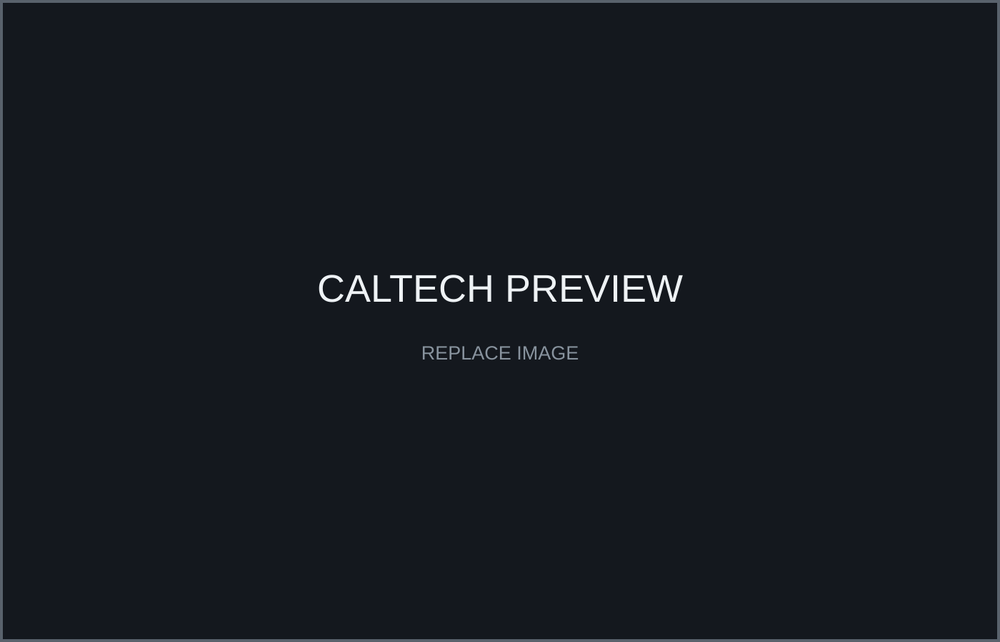
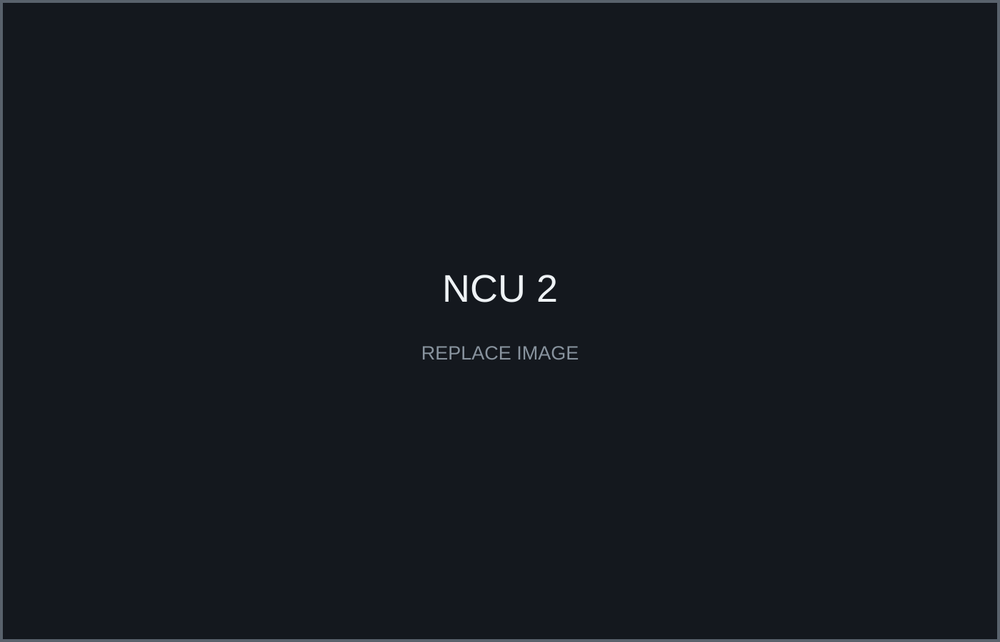
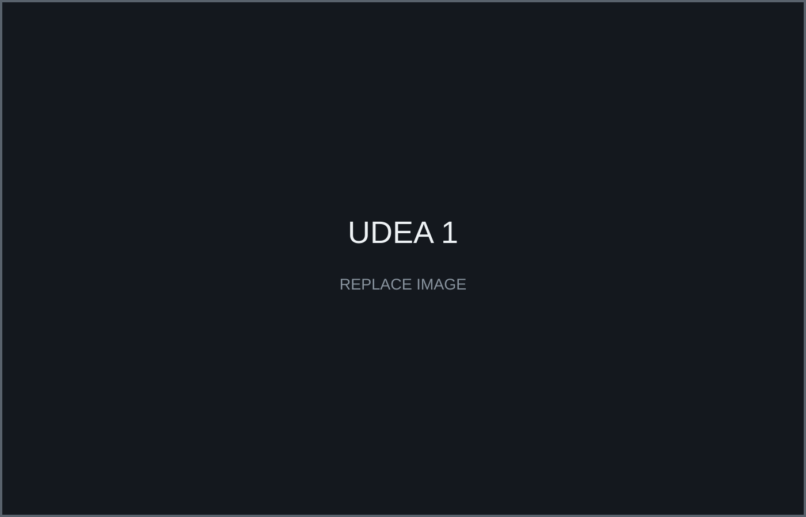

Caltech SURF — AMBER Lab
Open research record ↗
Click any experience to open the detailed research record, methods, media, evidence and outputs.

Safety-critical control and contingency-aware autonomy for an analog Mars-helicopter landing problem in dynamic obstacle environments.
Developed and evaluated contingency-aware safety filters and contributed to ATMOS simulation and spacecraft hardware-validation workflows.
Generated safe trajectories in 5–10 ms versus 20–70 ms for Poisson- and Hamilton–Jacobi-based methods in the tested scenarios. Hardware and simulation experiments completed; formal theoretical validation remains ongoing.
Multi-UAV networking, SNaaS simulation, resilient swarm behavior, dynamic topology and communication degradation.
Built reproducible multi-UAV workflows and compared communication-performance trends against AirPAW datasets.
ROS 2 multi-sensor navigation using IMU, GNSS, camera-VIO and odometry with EKF/UKF and SLAM/VIO fallback.
Reduced ESP32–Jetson–server latency from 92 ms to 6 ms and validated navigation at ARTC and laboratory tracks.

Atmospheric descent dynamics, multi-Pitot sensing, IMU/GPS/Pitot fusion, CFD, wind-tunnel calibration and post-flight reconstruction.
Supported avionics, telemetry and Spaceport America Cup 2025 operations using real flight data for validation.
